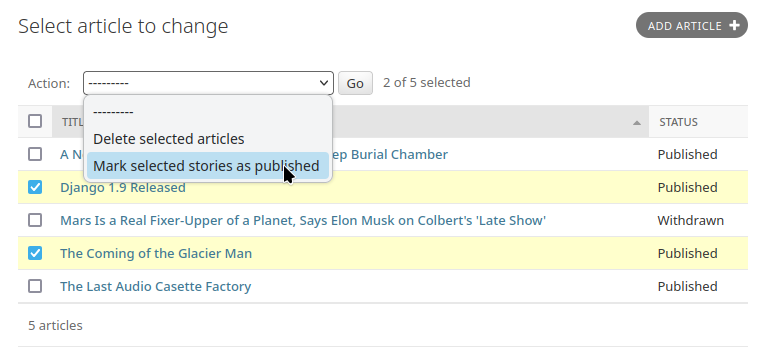
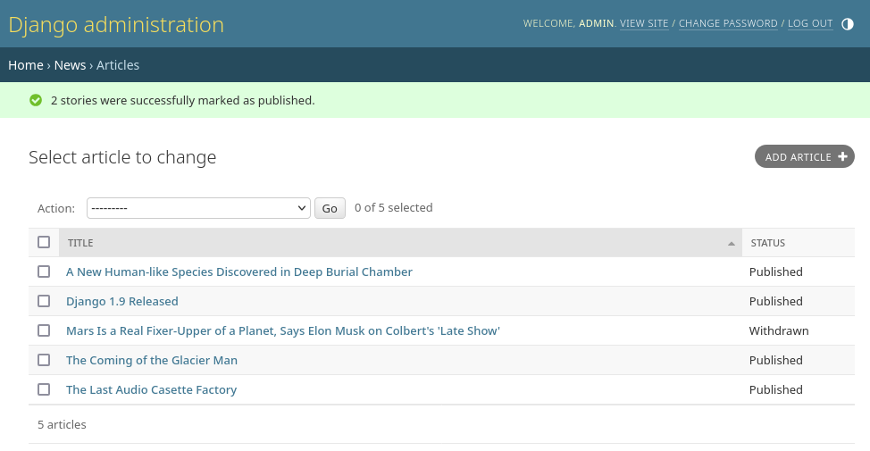

Djangoの管理者の基本的な仕事は、一言で言えば、「オブジェクトを選択し、それを変更する」ことに尽きます。これは大多数のユースケースに当てはまります。しかし、一度に多くのオブジェクトに同じ変更を適用する必要がある場合、この仕事は退屈です。
このような場合、 Django の管理画面では、"アクション" を書いて登録できます。チェンジリストページで選択されたオブジェクトのリストで呼び出される関数です。
Django には、すべてのモデルで利用可能な "delete selected objects" アクションが同梱されています。たとえば、これは Django 組み込みの django.contrib.auth アプリの user モジュールです:
警告
"選択したオブジェクトの削除" アクションは効率の観点から QuerySet.delete() を使用します。使用したモデルの delete() メソッドが呼ばれないことは重要な注意点です。
この動作をオーバーライドしたい場合は、 ModelAdmin.delete_queryset() をオーバーライドするか、選択された各アイテムに対して Model.delete() を呼び出すなど、お好みの方法で削除を行うカスタムアクションを書くことができます。
一括削除に関するより詳しい背景については、 オブジェクトの削除 のドキュメントを参照してください。
このリストに自分のアクションを追加する方法については、以下で説明しています。
アクションを説明する最も簡単な方法は例を挙げることです。早速詳しく見ていきましょう。
管理アクションの一般的なユースケースはモデルの一括更新です。 Article モデルを持つニュースアプリケーションを想像してみてください:
from django.db import models
STATUS_CHOICES = {
"d": "Draft",
"p": "Published",
"w": "Withdrawn",
}
class Article(models.Model):
title = models.CharField(max_length=100)
body = models.TextField()
status = models.CharField(max_length=1, choices=STATUS_CHOICES)
def __str__(self):
return self.title
このようなモデルで行う一般的なタスクは記事のステータスを "draft "から "published "に更新することです。管理画面で一度に1つの記事を更新するのは簡単ですが、記事のグループを一括で公開するのは面倒です。そこで、記事のステータスを "published " に変更するアクションを書いてみましょう。
最初に、管理画面からアクションがトリガーされたときに呼び出される関数を書く必要があります。アクション関数は3つの引数を取る通常の関数です:
現在の ModelAdmin
現在のリクエストを表す HttpRequest
ユーザーが選択したオブジェクトのセットを含む QuerySet 。
publish-these-articles 関数は ModelAdmin やリクエストオブジェクトを必要としませんが、クエリセットを使用します:
def make_published(modeladmin, request, queryset):
queryset.update(status="p")
注釈
最高のパフォーマンスを得るために、クエリセットの update メソッド を使用しています。他のタイプのアクションでは、各オブジェクトを個別に処理する必要があるかもしれません。このような場合は、クエリセットをイテレートします:
for obj in queryset:
do_something_with(obj)
アクションの書き方はこれだけです！しかし、もう1つオプションの、しかし便利なステップを踏んで、管理画面でアクションに "素敵な "タイトルをつけましょう。デフォルトでは、このアクションは "Make published "としてアクションリストに表示されます。しかし、 make_published 関数に action() デコレータを使用することで、より良い、人にやさしい名前をつけることができます:
from django.contrib import admin
...
@admin.action(description="Mark selected stories as published")
def make_published(modeladmin, request, queryset):
queryset.update(status="p")
注釈
これには見覚えがあるかもしれません。admin の list_display オプションも、登録されたコールバック関数に対して人間が読みやすい説明を提供するために、 display() デコレータを使用して同じテクニックを使っています。
ModelAdmin にアクションを追加する¶次に ModelAdmin にアクションを通知する必要があります。これは他の設定オプションと同じように動作します。アクションとその登録を含む admin.py は次のようになります:
from django.contrib import admin
from myapp.models import Article
@admin.action(description="Mark selected stories as published")
def make_published(modeladmin, request, queryset):
queryset.update(status="p")
class ArticleAdmin(admin.ModelAdmin):
list_display = ["title", "status"]
ordering = ["title"]
actions = [make_published]
admin.site.register(Article, ArticleAdmin)
このコードによって、次のような admin チェンジリストができます:
本当にそれだけです！もしあなたが自分のアクションを書きたくてうずうずしているのであれば、これで始めるのに十分な知識が得られました。このドキュメントの残りの部分では、より高度なテクニックを扱います。
アクションの実行中に予見可能なエラー状態が発生した場合、ユーザに問題を潔く知らせるべきです。これは、例外のハンドリングと、 django.contrib.admin.ModelAdmin.message_user() を使用して、レスポンスに問題のユーザーフレンドリーな説明を表示することを意味します。
より高度なオプションのために、いくつかの追加の選択肢や出来ることがあります。
ModelAdmin メソッドとしてのアクション¶上記の例は、関数として定義された make_published アクションを示しています。これは全く問題ありませんが、コード設計の観点からは完璧とは言えません。アクションが Article オブジェクトに密接に結びついているため、アクションを ArticleAdmin オブジェクト自体にフックするほうが理にかなっています。
次のようにします:
class ArticleAdmin(admin.ModelAdmin):
...
actions = ["make_published"]
@admin.action(description="Mark selected stories as published")
def make_published(self, request, queryset):
queryset.update(status="p")
まず make_published をメソッドに移動し、 modeladmin パラメータの名前を self に変更していることに注意してください。次に、関数を直接参照する代わりに actions に 'make_published' という文字列を指定していることに注意してください。これは ModelAdmin にアクションをメソッドとして検索するように指示します。
アクションをメソッドとして定義することで、アクションはより自然な形で ModelAdmin 自体にアクセスすることができるようになり、admin が提供する任意のメソッドをアクションが呼び出せるようになります。
例えば、self を使って、アクションが成功したことを知らせるメッセージをフラッシュすることができます:
from django.contrib import messages
from django.utils.translation import ngettext
class ArticleAdmin(admin.ModelAdmin):
...
def make_published(self, request, queryset):
updated = queryset.update(status="p")
self.message_user(
request,
ngettext(
"%d story was successfully marked as published.",
"%d stories were successfully marked as published.",
updated,
)
% updated,
messages.SUCCESS,
)
これにより、アクションの実行に成功した後の表示が admin 自身による表示とマッチするようになります:
デフォルトでは、アクションが実行された後、ユーザーは元のチェンジリストページにリダイレクトされます。しかし、いくつかのアクション、特により複雑なアクションは中間ページを返す必要があります。例えば、組み込みの削除アクションは、選択したオブジェクトを削除する前に確認を求めます。
中間ページを提供するには、アクションから HttpResponse (またはそのサブクラス) を返します。たとえば、選択したオブジェクトを JSON としてダンプするエクスポート関数を書くには、Django の シリアライズ関数 を使います:
from django.core import serializers
from django.http import HttpResponse
def export_as_json(modeladmin, request, queryset):
response = HttpResponse(content_type="application/json")
serializers.serialize("json", queryset, stream=response)
return response
通常、上記のようなことはあまり良いアイデアとはみなされません。たいていの場合、 HttpResponseRedirect を返し、選択したオブジェクトのリストを GET クエリ文字列で渡して、あなたが書いたビューにユーザをリダイレクトするのがベストプラクティスでしょう。これにより、中間ページで複雑なインタラクションロジックを提供できます。たとえば、より完全なエクスポート機能を提供したい場合、ユーザーにフォーマットや、場合によってはエクスポートに含めるフィールドのリストを選択させたいでしょう。最良の方法は、カスタムエクスポートビューにリダイレクトする小さなアクションを書くことです:
from django.contrib.contenttypes.models import ContentType
from django.http import HttpResponseRedirect
def export_selected_objects(modeladmin, request, queryset):
selected = queryset.values_list("pk", flat=True)
ct = ContentType.objects.get_for_model(queryset.model)
return HttpResponseRedirect(
"/export/?ct=%s&ids=%s"
% (
ct.pk,
",".join(str(pk) for pk in selected),
)
)
見ての通り、アクションはとても短いです。複雑なロジックはすべてエクスポートビューにあります。これは任意のタイプのオブジェクトを扱う必要があるため、ContentType に関する処理が必要になります。
このビューの作成は、読者にとっての演習課題として残されています。
アクションによっては、管理サイトの すべての オブジェクトで利用できるようにするのが最適なものもあります。上記で定義したエクスポートアクションはその良い候補でしょう。アクションをグローバルに利用可能にするには AdminSite.add_action() を使います。たとえば:
from django.contrib import admin
admin.site.add_action(export_selected_objects)
これにより、export_selected_objects アクションは "export_selected_objects" という名前のアクションとしてグローバルに利用可能になります。後でプログラム的に アクションを削除する 場合に備えてアクションに明示的に名前を付けたい場合は、 AdminSite.add_action() へ第二引数を渡します:
admin.site.add_action(export_selected_objects, "export_selected")
特定のオブジェクトに対して、 サイト全体に登録された 特定のアクションを無効にしたいことがあるでしょう。アクションを無効にする方法はいくつかあります:
サイト全体のアクション を無効にするには、 AdminSite.disable_action() を呼び出します。
例えば、このメソッドを使って、組み込みの "delete selected objects" アクションを削除できます:
admin.site.disable_action("delete_selected")
上記の操作を行うと、そのアクションはサイト全体で無効になります。
しかし、ある特定のモデルに対してグローバルに無効化されたアクションを再度有効にする必要がある場合は、ModelAdmin.actions リストに明示的にリストアップしてください:
# Globally disable delete selected
admin.site.disable_action("delete_selected")
# This ModelAdmin will not have delete_selected available
class SomeModelAdmin(admin.ModelAdmin):
actions = ["some_other_action"]
...
# This one will
class AnotherModelAdmin(admin.ModelAdmin):
actions = ["delete_selected", "a_third_action"]
...
ModelAdmin ですべてのアクションを無効にする¶指定した ModelAdmin で すべての 一括アクションを無効にするには、 ModelAdmin.actions を None に設定します:
class MyModelAdmin(admin.ModelAdmin):
actions = None
これは ModelAdmin に対して、 サイト全体のアクション を含む全てのアクションを表示しない、または許可しないようにします。
最後に、 ModelAdmin.get_actions() をオーバーライドすることで、リクエスト単位で (つまりユーザ単位で) 条件付きでアクションを有効/無効にすることができます。
これは許可されているアクションの辞書を返します。キーはアクション名で、値は (function, name, short_description) タプルです。
たとえば、名前が J で始まるユーザーだけがオブジェクトを一括削除できるようにしたい場合、次のようにします。
class MyModelAdmin(admin.ModelAdmin):
...
def get_actions(self, request):
actions = super().get_actions(request)
if request.user.username[0].upper() != "J":
if "delete_selected" in actions:
del actions["delete_selected"]
return actions
特定の権限を持つユーザーに利用を制限するには、アクション関数を action() デコレータでラップし、次のように permissions 引数を渡します。
@admin.action(permissions=["change"])
def make_published(modeladmin, request, queryset):
queryset.update(status="p")
make_published() アクションは ModelAdmin.has_change_permission() チェックに合格したユーザのみが利用できます。
もし permissions が複数のパーミッションを持っている場合、ユーザが少なくとも1つのチェックに合格していれば、そのアクションを利用できます。
permissions で使用可能な値と対応するメソッドチェックは以下の通りです。
'change': ModelAdmin.has_change_permission()
'delete': ModelAdmin.has_delete_permission()
'view': ModelAdmin.has_view_permission()
対応する has_<value>_permission(self, request) メソッドを ModelAdmin に実装すれば、他の値も指定できます。
例:
from django.contrib import admin
from django.contrib.auth import get_permission_codename
class ArticleAdmin(admin.ModelAdmin):
actions = ["make_published"]
@admin.action(permissions=["publish"])
def make_published(self, request, queryset):
queryset.update(status="p")
def has_publish_permission(self, request):
"""Does the user have the publish permission?"""
opts = self.opts
codename = get_permission_codename("publish", opts)
return request.user.has_perm("%s.%s" % (opts.app_label, codename))
action デコレータ¶このデコレータは、actions で使用できるカスタムアクション関数に特定の属性を設定するために使用できます。
@admin.action(
permissions=["publish"],
description="Mark selected stories as published",
)
def make_published(self, request, queryset):
queryset.update(status="p")
これは、いくつかの属性を（元の長い名前で）関数に直接設定することと等価です。
def make_published(self, request, queryset):
queryset.update(status="p")
make_published.allowed_permissions = ["publish"]
make_published.short_description = "Mark selected stories as published"
このデコレータの使用は、アクション関数を作成する上で必須ではありませんが、 関数の目的を特定するための目印として、引数なしで使用すると便利です。
@admin.action
def make_inactive(self, request, queryset):
queryset.update(is_active=False)
この場合、関数に属性は追加されません。
アクションの説明は %-フォーマットで、 '%(verbose_name)s' と '%(verbose_name_plural)s' のプレースホルダを含むことができ、それぞれモデルの verbose_name と verbose_name_plural に置き換えられます。
1月 22, 2025